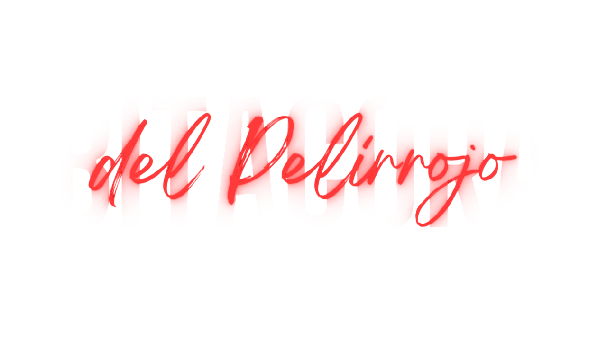
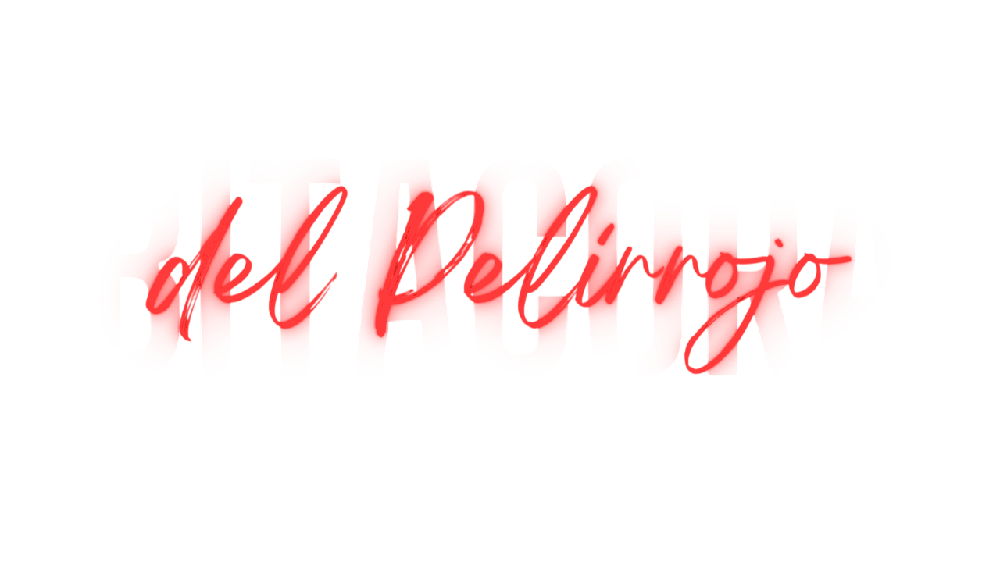
ROGER SE ENCUENTRA A SHANKS EN UN COFRE TRAS EL INCIDENTE DE GOD VALLEY EN DICHA ISLA. EL NIÑO SONRÍE MIENTRAS VE A LA TRIPULACIÓN DE ROGER.
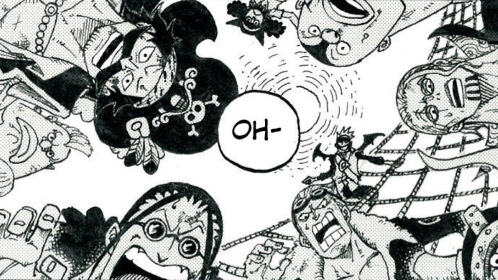 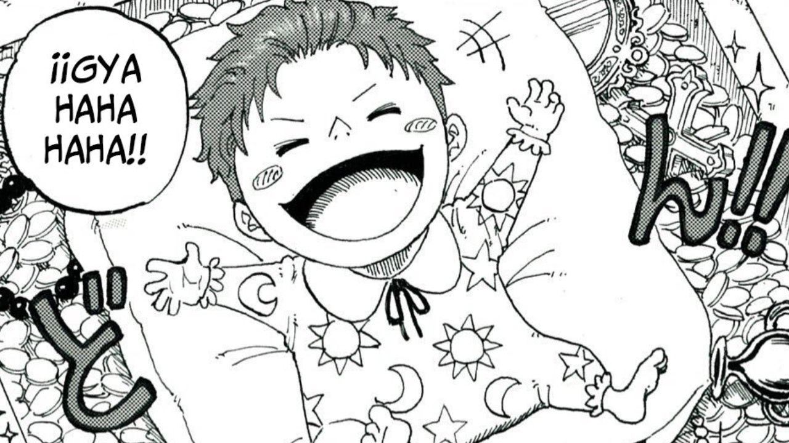SHANKS Y BUGGY FORMAN PARTE DE LA TRIPULACIÓN DE ROGER. EVENTUALMENTE, SU COMPAÑERO BUGGY ENCUENTRA UNA FRUTA DEL DIABLO Y HACE QUE, POR ACCIDENTE, SE COMA LA FRUTA QUE TENIA PENSADO VENDER POR UN GRAN TESORO.
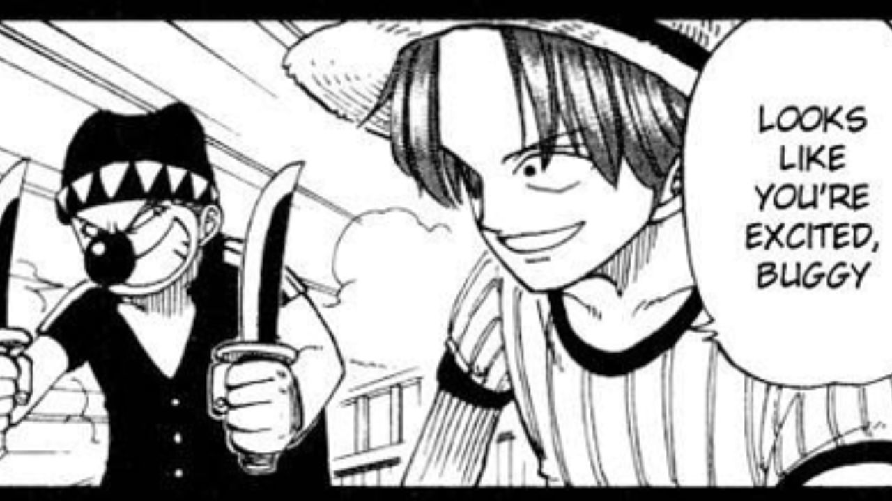 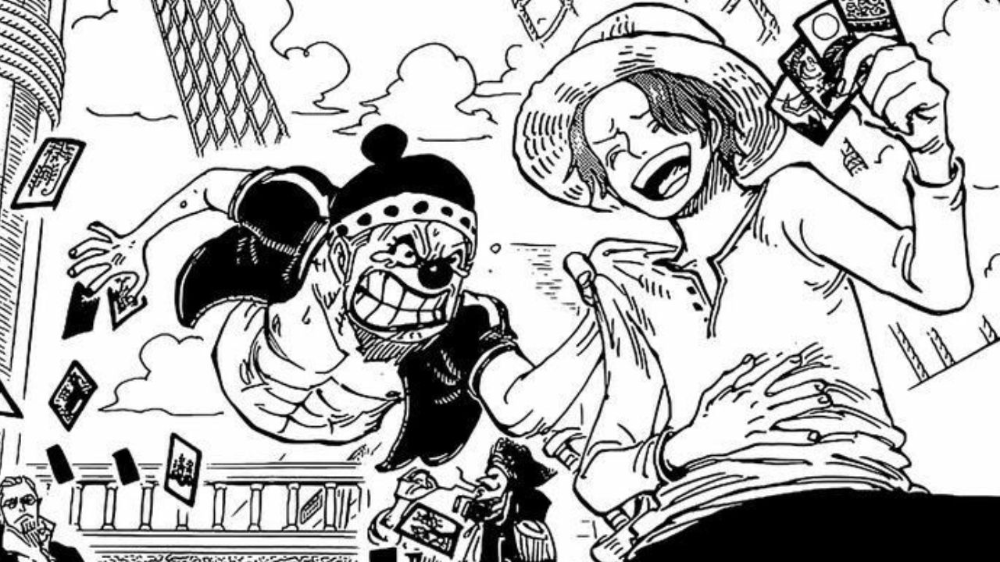DESCUBREN LA ENFERMEDAD DE SU CAPITÁN, GOLD ROGER.
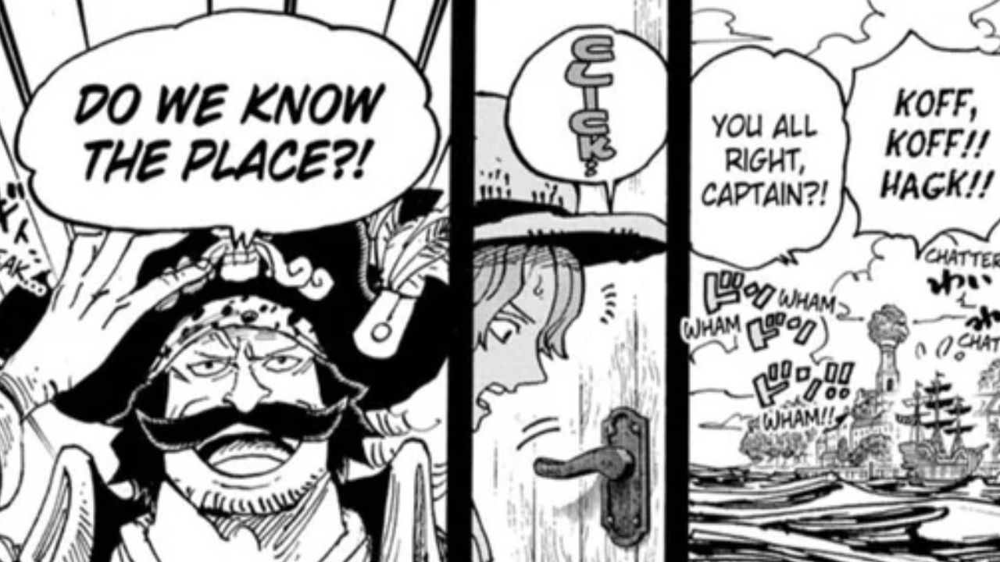PARTICIPA EN LA BATALLA DE EDD WAR. DICHA BATALLA ES CONTRA SHIKI 'EL LEÓN DORADO', UNO DE LOS ANTIGUOS INTEGRANTES DE LOS PIRATAS DE ROCKS, QUIEN LO DESAFIA TRAS LA NEGATIVA DE ROGER DE 'CONQUISTAR EL MUNDO JUNTO A ÉL'. LA BATALLA ACABA EN VICTORIA PARA LOS PIRATAS DE ROGER TRAS UNA 'DESAFORTUNADA' TORMENTA QUE ACABA CON LA FLOTA DE SHIKI.
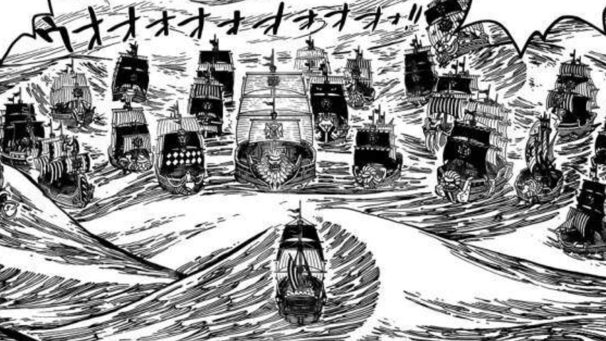 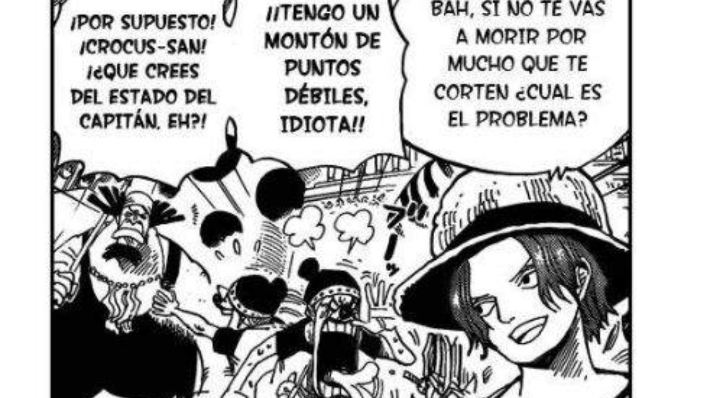DURANTE UN ENCONTRONAZO CON LA BANDA DE SHIROHIGE, CONOCE A UN JOVEN MARSHALL D TEACH, DE QUIEN SE COMENTA QUE NUNCA DUERME. TRAS LOS EVENTOS DE ESTE SUCESO, ODEN SE UNE A LA BANDA DE ROGER Y JUNTOS DECIDEN IR HACIA 'LAUGH TALE'. EN LA PARTE FINAL DEL TRAYECTO, SHANKS DECIDE NO IR A LA ÚLTIMA ISLA PARA PODER CUIDAR DE SU COMPAÑERO BUGGY, EL CUAL ESTA ENFERMO. TRAS EL REGRESO DE LA BANDA, ROGER LE DA UNA INFORMACIÓN QUE HACE QUE SE EMOCIONE. POSTERIORMENTE, TRAS LA PROCLAMACIÓN DE ROGER COMO EL REY DE LOS PIRATAS, SE DISUELVE LA BANDA.
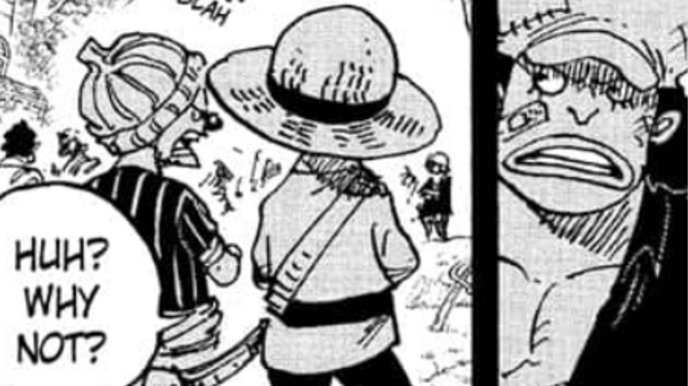 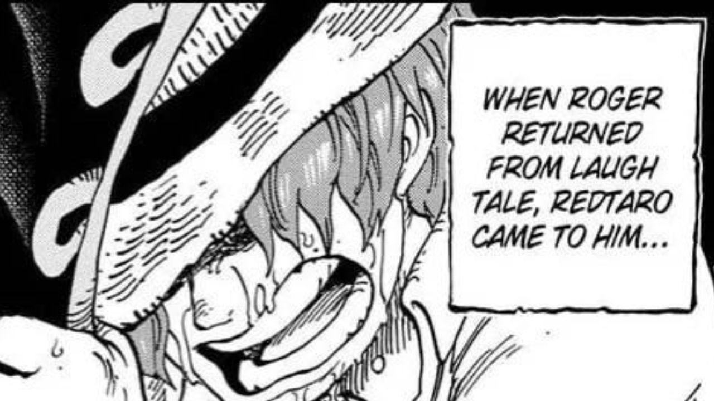PRESENCIA LA EJECUCIÓN DE ROGER. BUGGY, QUE ADMIRA AL JOVEN PELIRROJO POR QUE VE EN ÉL A UN SUCESOR DE ROGER, LE PROPONE FORMAR UNA NUEVA BANDA PIRATA JUNTOS PARA RECLAMAR EL ONE PIECE, PERO SHANKS SE OPONE ARGUMENTANDO QUE 'AUN NO ES EL MOMENTO'. ANTE ESTA NEGATIVA, BUGGY SE ENFADA CON ÉL, MARCANDO ASÍ EL FIN DE SU AMISTAD.
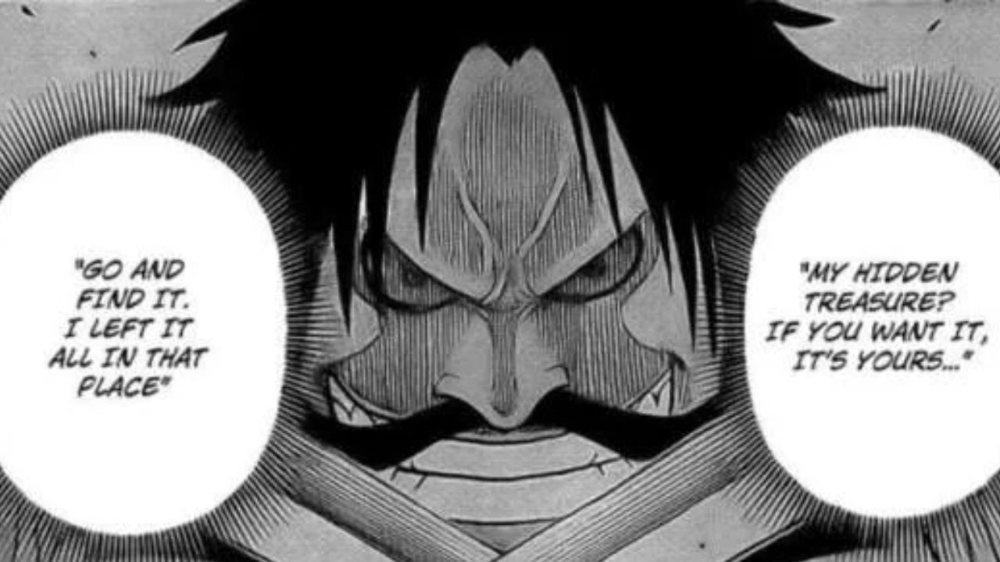 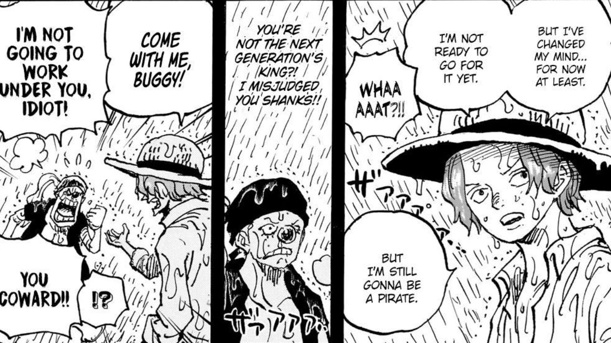SE ENCUENTRA CON SCOPPER GABAN, ANTIGUO NAVEGANTE DE LOS PIRATAS DE ROGER, EN LA TIERRA DE LOS GIGANTES, ELBAPH. SHANKS PARECE TENER UNA MARCA EN SU BRAZO IZQUIERDO QUE RECUERDA A LA DE LOS CABALLEROS SAGRADOS. ESE MISMO DÍA EN ELBAPH, SE ACABA CON LA VIDA DE SU REY HARALD, Y SE ROBA EL UNA FRUTA DEL DIABLO MÍTICA, RELIQUIA DE ESE PAÍS.
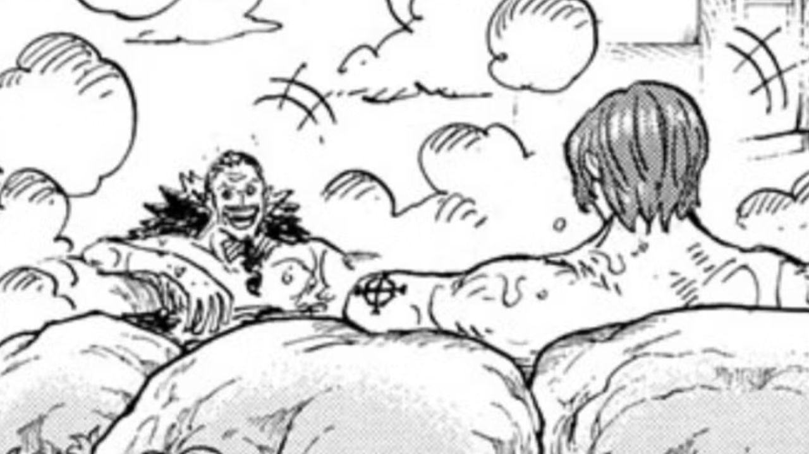DURANTE UN ATAQUE A UN BARCO DEL GOBIERNO MUNDIAL, LA BANDA DE LOS PIRTAS DEL PELIRROJO SE HACEN CON LA FRUTA 'GOMU GOMU', LA CUAL ERA ESCOLTADA POR EL CP9. UNA FRUTA QUE RESULTÓ SER LEGENDARIA Y QUE PARECÍA 'SER ESQUIVA' A LOS DESEOS DEL GOBIERNO MUNDIAL.
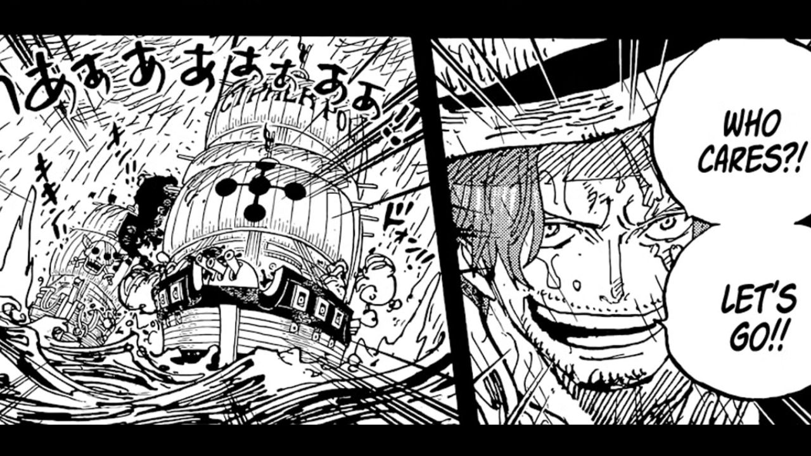DURANTE SU ESTANCIA EN VILLA FOOSHA, CERCA DEL REINO DE GOA, EN EL EAST BLUE, UN JOVEN LUFFY SE COME POR ACCIDENTE LA FRUTA 'GOMU GOMU' MIENTRAS ESTÁ EN UN BAR FESTEJANDO CON LA BANDA DEL PELIRROJO. TRAS ELLO, SHANKS SE VE ENVUELTO EN UN INCIDENTE CON UNOS BANDIDOS DE LA MONTAÑA QUE ACABA CON EL SECUESTRO DE LUFFY POR PARTE DEL CABECILLA DE LA BANDA. SHANKS ACABA RESOLVIENDO LA SITUACIÓN, SACRIFICANDO SU BRAZO ANTE UN REY MARINO CERCA DE LA COSTA DE ALDEA POR 'EL FUTURO DE LA NUEVA ERA'.
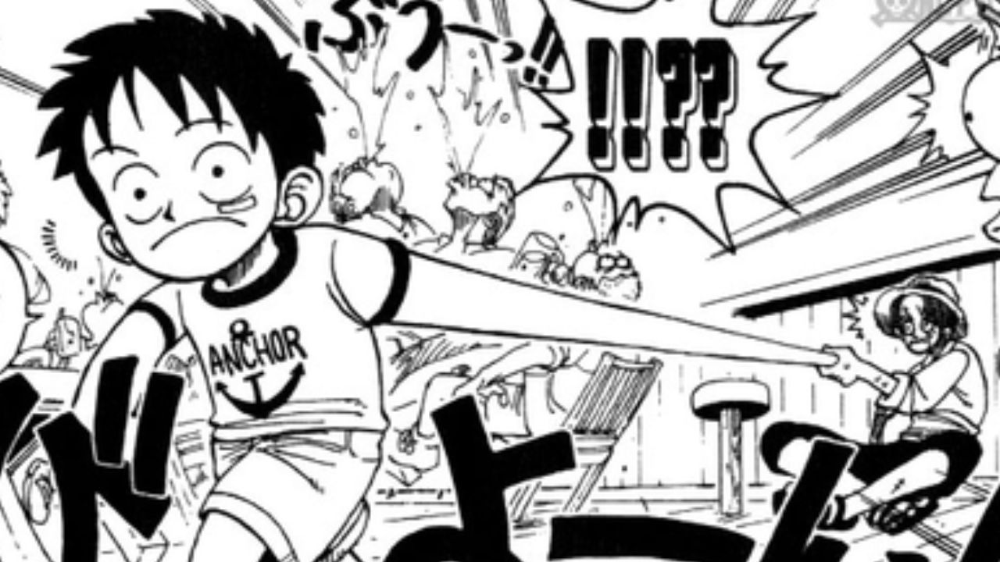 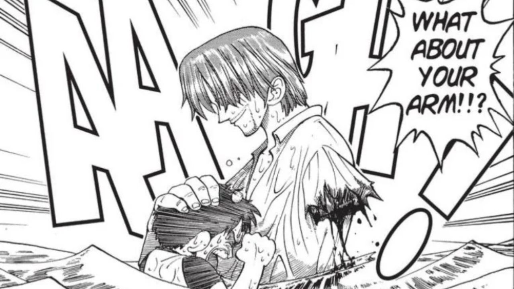EL PELIRROJO ES NOMBRADO COMO UNO DE LOS CUATRO EMPERADORES DEL MAR CON UNA RECOMPENSA DE TOTAL DE 4.048.900.000 BERRIES.
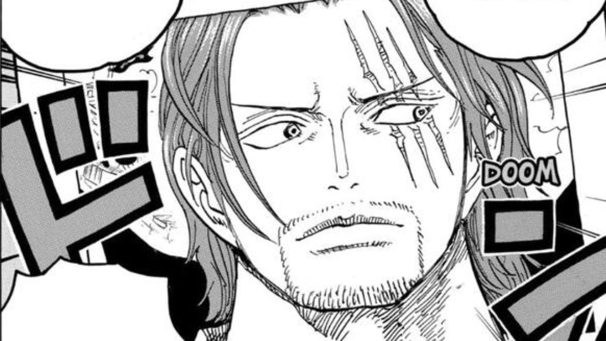SHANKS Y ACE SE ENCUENTRAN EN UNA CIERTA ISLA DEL NUEVO MUNDO.ALLI, ADEMÁS DE HABLAR DE LUFFY, ACE FUE ENVIADO POR SHIROHIGE PARA ADVERTIR A SHANKS DE QUE NO INTERFIRIERA EN SU MISIÓN DE CAZAR A TEACH. SHANKS EN CAMBIO, LE ADVIERTE A ACE QUE NO SUBESTIME A ESE PIRATA Y LE PIDE QUE ABANDONE ESA MISIÓN SUICIDA.
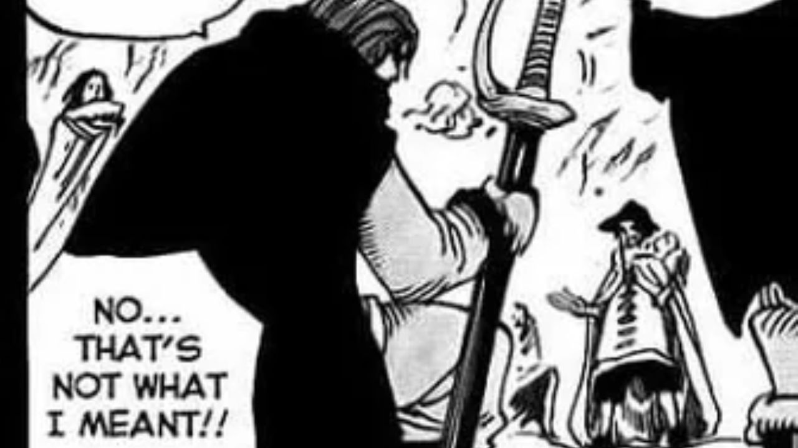EN EL NUEVO MUNDO, A BORDO DEL MOBY DICK, BARCO DEL LEGENDARIO EMPERADOR DEL MAR SHIROHIGE, SHANKS Y NEWGATE SE REÚNEN. EL PELIRROJO INTENTA PERSUADIRLO DE SU CAZA A MARSHALL D TEACH. SHIROHIGE RECHAZA ESA PROPUESTA CON FIRMEZA Y AMBOS ACABAN CHOCANDO ARMAS, HACIENDO QUE TRAS EL IMPACTO, EL CIELO QUEDARA DIVIDIDO EN DOS. ESTE ENCUENTRO MARCA EL PRELUDIO A LO QUE POSTERIORMENTE SERIA CONOCIDA COMO 'LA GUERRA DE MARINEFORD'. DURANTE DICHA GUERRA, SHANKS LUCHA CONTRA EL EMPERADOR DEL MAR KAIDO, PARA QUE ESTE NO PUEDA PARTICIPAR EN LA BATALLA. FINALMENTE, ACABA LLEGANDO AL CAMPO DE BATALLA, TENIENDO UN ENCONTRONAZO CON EL ALMIRANTE SAKAZUKI Y PONIENDO FIN A LA BATALLA CON SU PRESENCIA.
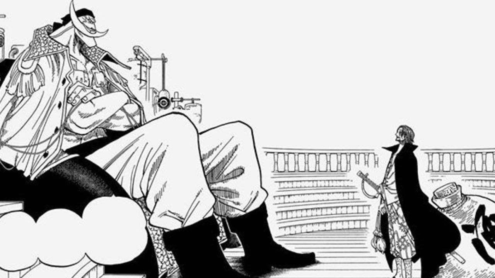 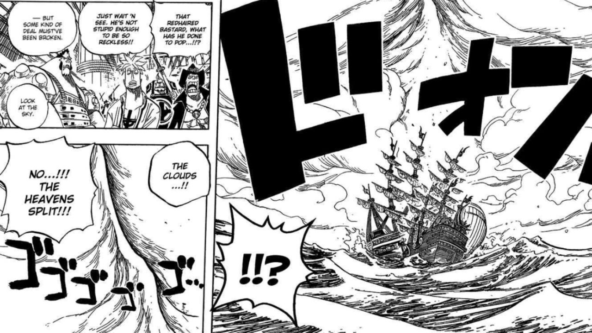 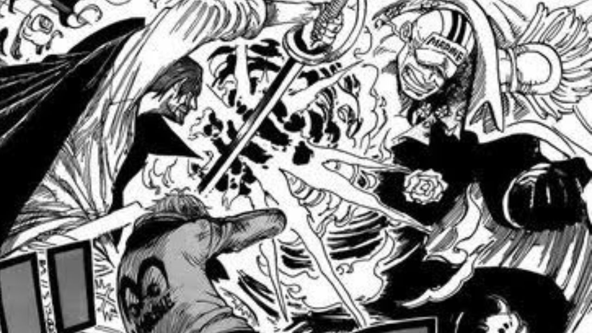 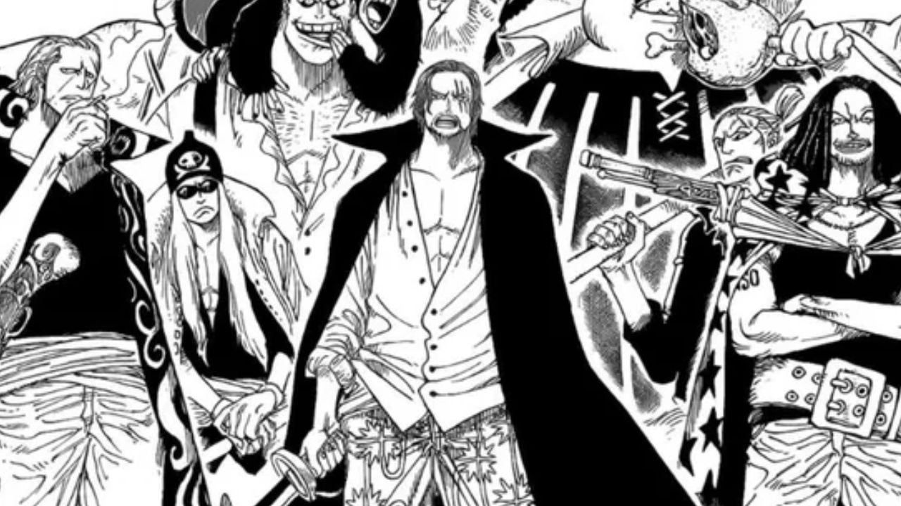TRAS DERROTAR Y ANIQUILAR A LA TRIPULACIÓN A LA TRIPULACIÓN DE BARTOLOMEO, QUIEN RECLAMO UNO DE LOS PIRATAS DEL PELIRROJO PARA LA GRAN FLOTA DE LOS SOMBRERO DE PAJA, AL VIAJAR POR UN MAR CERCANO A LAS TIERRAS DE WANO, CONSIGUE, CON UN DOMINIO EXCEPCIONAL DEL HAKI, ACABAR CON LA AMENAZA DEL ALMIRANTE RYOKUGYU, QUIEN QUERIA APROVECHAR LA SITUACIÓN DE INESTABILIDAD DEL PAÍS PARA RECLAMAR EL TERRITORIO EN NOMBRE DEL GOBIERNO MUNDIAL. TRAS ELLO, AL VER EL NUEVO CARTEL DE SE BUSCA DE LUFFY, LE DICE A SU TRIPULANTE BENN BECKMAN QUE 'ES EL MOMENTO DE RECLAMAR EL LEGENDARIO TESORO ONE PIECE'. TRAS ELLO, EN ELBAPH, SU TRANQUILIDAD SE VE INTERRUMPIDA CON LA LLEGADA DE UNO DE LOS NOVATOS DE LA PEOR GENERACIÓN, EUSSTASS CAPTAIN KIDD. TRAS VISLUMBRAR LAS NEFASTAS CONSECUENCIAS QUE TRAIA CONSIGO EL PIRATA CON SU HAKI DE VISIÓN, ESTE LO ANIQUILA DE UN SOLO ATAQUE, 'DIVINE DEPARTURE'. FINALMENTE, SU TRIPULACIÓN ABANDONA LA ISLA DE LOS GIGANTES MIENTRAS LE SIGUEN LA PISTA AL PIRATA MARSHALL D TEACH.
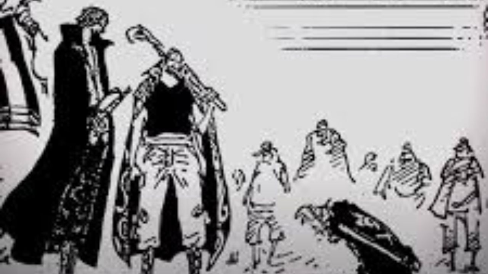 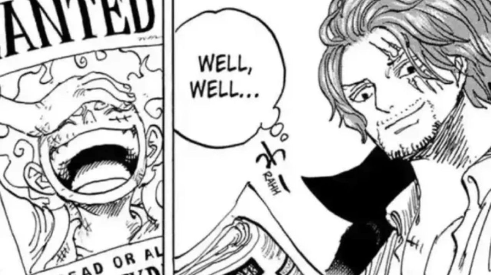 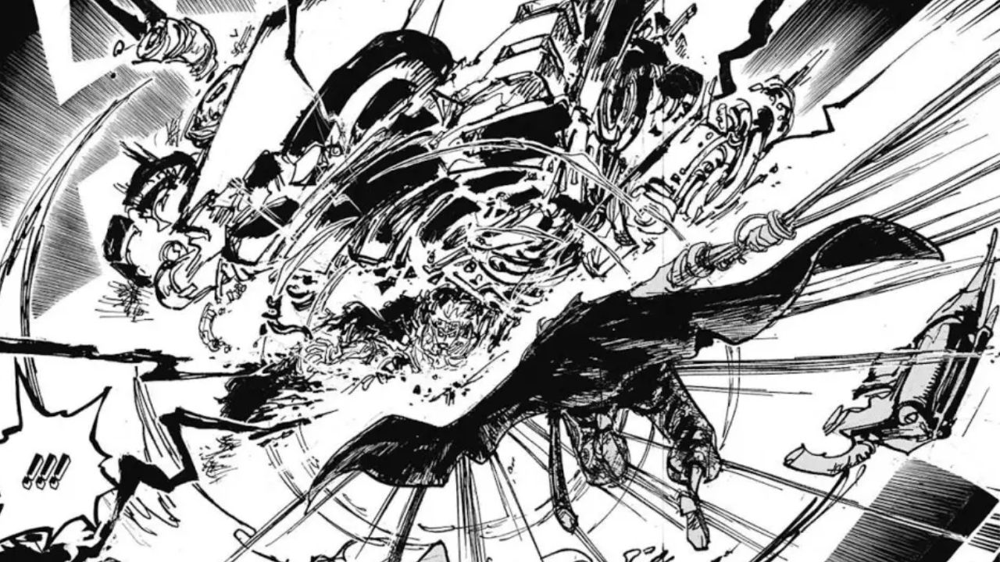